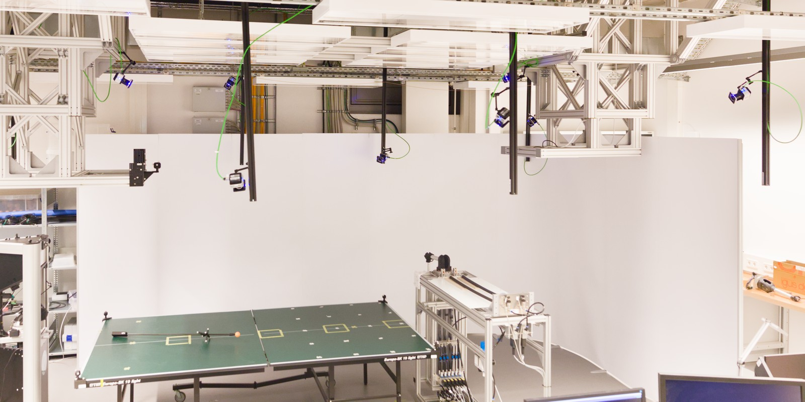
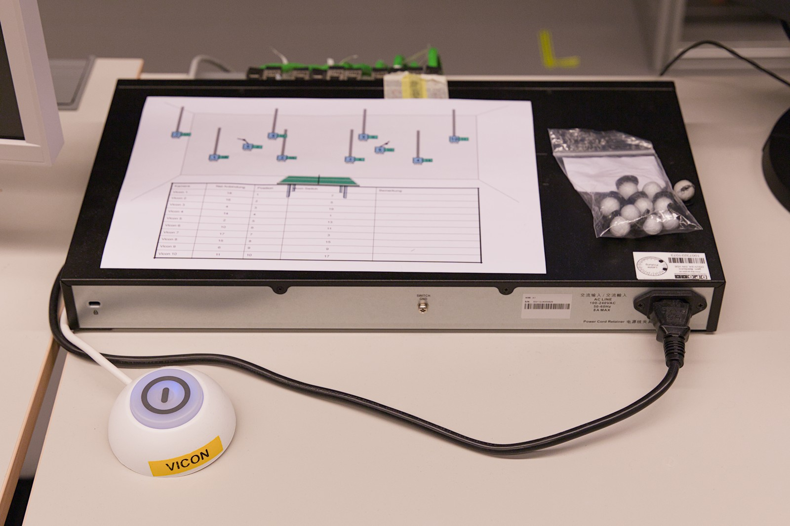
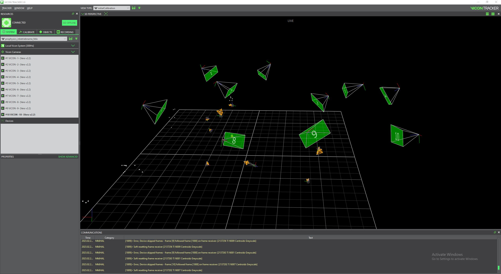

More info: Vicon
The robot lab is equipped with a Vicon system for tracking positions of the robot, table and other things like the ball launcher.
Note
There are presentation slides from a group meeting giving an overview of the system. For more detailed documentation see below.
The Lab’s World Frame
Our goal is to have a fixed “world frame” in the lab. Poses of all objects (robot, table, balls, …) should be given relative to this world frame in all our applications. As origin of this world frame the “ping” Vicon marker is used.
When using the interface of pam_vicon, poses of all Vicon objects are
already transformed to this world frame. This means that the actual origin used
by Vicon Tracker, as defined during calibration, does not really matter. Only
for visualisation in Vicon Tracker itself, it is useful to have it aligned with
the floor.
For other tracking systems a transformation from their internal reference frame to the world frame needs to be determined. To do this for tennicam, see More info: Compute Transformation from Tennicam to World Frame.
How to Start the Vicon System
The cameras are connected to and powered through a network switch which sits on a desk in the lab.
To start the cameras, power on the switch by pressing the big button labelled with “Vicon”.
Further, start the PC labelled with “Vicon”, that is connected to the switch. On the PC run the “Vicon Tracker” software (there should be a shortcut on the desktop).
In the Vicon Tracker software, you see a list of cameras with their status. When you switch the view to “3D PERSPECTIVE”, you can see a visualisation of the scene with the cameras and the detected markers/objects.
Vicon Tracker needs to be running in order to use the system. It serves as a server application to which our software connects to get the object poses.
Further you can configure cameras and objects as well as re-calibrate the system through this software. See the documentation from Vicon for more information on this.
How to Access Vicon Data
When the Vicon System is running (see above), there are a few basic tools in the
vicon_transformer package to access the data.
Print Data
To simply print the current data, use the vicon_print_data command.
As host name, pass the IP of the Vicon PC (see label on the PC).
This will show poses of the subjects relative to Vicons internal origin (i.e. not transformed to the lab’s world frame!
Usage: vicon_print_data <vicon-host-name-or-file> [options]
Allowed options:
-h [ --help ] Show help message.
--vicon-host-name-or-file arg Host name (or IP) of the Vicon PC or the path
to a recorded file.
--subjects arg Only receive data for the listed subjects.
--lightweight Enable lightweight frames (needs less bandwidth
at the cost of lower precision).
-n [ --num ] arg Only print the specified number of frames.
--json Produce JSON-formatted output.
Record Data
You can record data from the running system and save it to a file using the
vicon_record command. Files recorded like this can then be passed to other
applications instead of a host name to play back the recorded data.
Usage: vicon_record <vicon-host-name> <output-file> [options]
Allowed options:
-h [ --help ] Show help message.
--vicon-host-name arg Host name (or IP) of the Vicon PC.
--output-file arg Path/name of the file to which the recorded data is
written.
-d [ --duration ] arg How long to record (in seconds). Default: 60 s)
o80
Run vicon_o80_standalone to start the o80 back end:
vicon_o80_standalone <host or file>
Available options:
usage: vicon_o80_standalone [-h] [--segment-id SEGMENT_ID] [--frequency FREQUENCY] [--burst] [--lightweight] [--subjects SUBJECT [SUBJECT ...]] host_or_file
Run o80 Standalone instance for Vicon data. This serves as backend to which a FrontEnd instance can connect by using the same segment ID.
positional arguments:
host_or_file Hostname of Vicon server or path to recorded file.
optional arguments:
-h, --help show this help message and exit
--segment-id SEGMENT_ID, -s SEGMENT_ID
Shared memory segment ID. Default: 'vicon'
--frequency FREQUENCY, -f FREQUENCY
Frequency.
--burst Run in bursting mode. --frequency is ignored in this case.
--lightweight Enable 'lightweight mode' of Vicon. Saves bandwidth by reducing precision of subject poses.
--subjects SUBJECT [SUBJECT ...]
Filter for listed subjects. Other subjects are still included in the frame data but without actual data (saves bandwidth).
For a simple example script that uses a corresponding front end see Examples: Access Vicon Data Through o80.
Note that there are no commands that can be send to the Vicon system and likewise the o80 “state” is empty. Instead, all information is provided through the “extended state”.
Configure Objects for o80
The shared memory used by o80 requires fixed-size data structures. Therefore, the number of objects as well as their names and order need to be defined at compile time. For instructions on how to do this, see Configure Subjects for o80 Driver.
Relevant Packages
The Vicon-related software is implemented in the packages vicon_transformer (everything that is generic) and pam_vicon (everything specific to our setup).